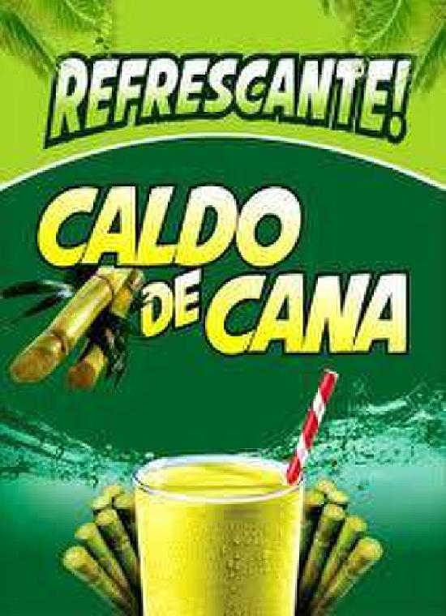

O caldo de cana é muito popular no Brasil. Essa bebida, rica em carboidratos e outros nutrientes, pode fornecer bastante energia e até ajudar a reduzir a fadiga muscular após o treino. No entanto, tomar caldo de cana só faz bem se consumido com moderação, já que a sua utilização diária pode ser ruim para a saúde.
saiba mais

web scaner são padrãos de desenvolvimentos criados defundidos pela w3c. saiba mais